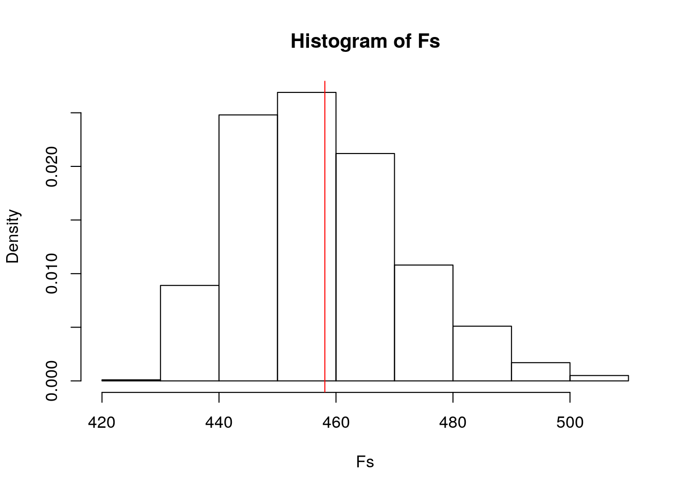

library(survival)
library(sandwich)
library(lmtest)
library(dplyr)
library(rstatix)
library(vegan)
library(plotROC)
library(glmnet)
## GIVE IT PREDICTED PROBS AND TRUTH LABELS (0/1), RETURNS
## VARIOUS DIAGNOSTICS
class_diag <- function(probs, truth) {
# CONFUSION MATRIX: CALCULATE ACCURACY, TPR, TNR, PPV
if (is.character(truth) == TRUE)
truth <- as.factor(truth)
if (is.numeric(truth) == FALSE & is.logical(truth) == FALSE)
truth <- as.numeric(truth) - 1
tab <- table(factor(probs > 0.5, levels = c("FALSE", "TRUE")),
factor(truth, levels = c(0, 1)))
acc = sum(diag(tab))/sum(tab)
sens = tab[2, 2]/colSums(tab)[2]
spec = tab[1, 1]/colSums(tab)[1]
ppv = tab[2, 2]/rowSums(tab)[2]
f1 = 2 * (sens * ppv)/(sens + ppv)
# CALCULATE EXACT AUC
ord <- order(probs, decreasing = TRUE)
probs <- probs[ord]
truth <- truth[ord]
TPR = cumsum(truth)/max(1, sum(truth))
FPR = cumsum(!truth)/max(1, sum(!truth))
dup <- c(probs[-1] >= probs[-length(probs)], FALSE)
TPR <- c(0, TPR[!dup], 1)
FPR <- c(0, FPR[!dup], 1)
n <- length(TPR)
auc <- sum(((TPR[-1] + TPR[-n])/2) * (FPR[-1] - FPR[-n]))
data.frame(acc, sens, spec, ppv, f1, auc)
}my <- myeloid
my <- my %>% na.omit()
head(my)## id trt sex futime death txtime crtime rltime
## 5 5 B f 326 1 112 56 200
## 8 8 A f 446 1 205 34 382
## 15 15 A m 261 1 99 32 154
## 18 18 A m 372 1 153 31 88
## 20 20 B m 2086 0 185 33 49
## 23 23 B f 963 1 101 33 668man1 <- manova(cbind(txtime, rltime, futime) ~ trt, data = my)
summary(man1)## Df Pillai approx F num Df den Df Pr(>F)
## trt 1 0.062415 2.9291 3 132 0.03609 *
## Residuals 134
## ---
## Signif. codes: 0 '***' 0.001 '**' 0.01 '*' 0.05 '.' 0.1 ' ' 1summary.aov(man1)## Response txtime :
## Df Sum Sq Mean Sq F value Pr(>F)
## trt 1 290571 290571 4.8593 0.0292 *
## Residuals 134 8012814 59797
## ---
## Signif. codes: 0 '***' 0.001 '**' 0.01 '*' 0.05 '.' 0.1 ' ' 1
##
## Response rltime :
## Df Sum Sq Mean Sq F value Pr(>F)
## trt 1 390922 390922 5.7269 0.01809 *
## Residuals 134 9146966 68261
## ---
## Signif. codes: 0 '***' 0.001 '**' 0.01 '*' 0.05 '.' 0.1 ' ' 1
##
## Response futime :
## Df Sum Sq Mean Sq F value Pr(>F)
## trt 1 2400624 2400624 5.4587 0.02095 *
## Residuals 134 58930445 439779
## ---
## Signif. codes: 0 '***' 0.001 '**' 0.01 '*' 0.05 '.' 0.1 ' ' 1pairwise.t.test(my$txtime, my$trt, p.adj = "none")##
## Pairwise comparisons using t tests with pooled SD
##
## data: my$txtime and my$trt
##
## A
## B 0.029
##
## P value adjustment method: nonepairwise.t.test(my$rltime, my$trt, p.adj = "none")##
## Pairwise comparisons using t tests with pooled SD
##
## data: my$rltime and my$trt
##
## A
## B 0.018
##
## P value adjustment method: nonepairwise.t.test(my$futime, my$trt, p.adj = "none")##
## Pairwise comparisons using t tests with pooled SD
##
## data: my$futime and my$trt
##
## A
## B 0.021
##
## P value adjustment method: none1 + 3 + 3## [1] 71 - (0.95^7) #type 1 error## [1] 0.30166270.05/7 #bonferroni## [1] 0.007142857# assumptions
group <- my$trt
DVs <- my %>% select(txtime, rltime, futime)
# Test multivariate normality for each group (null:
# assumption met)
sapply(split(DVs, group), mshapiro_test)## A B
## statistic 0.8153984 0.6100003
## p.value 3.338057e-07 6.697097e-13dists <- my %>% select(c(txtime, rltime, futime)) %>% dist()
adonis(dists ~ trt, data = my, method = "bray")##
## Call:
## adonis(formula = dists ~ trt, data = my, method = "bray")
##
## Permutation: free
## Number of permutations: 999
##
## Terms added sequentially (first to last)
##
## Df SumsOfSqs MeanSqs F.Model R2 Pr(>F)
## trt 1 3082116 3082116 5.4278 0.03893 0.018 *
## Residuals 134 76090225 567838 0.96107
## Total 135 79172342 1.00000
## ---
## Signif. codes: 0 '***' 0.001 '**' 0.01 '*' 0.05 '.' 0.1 ' ' 1SST <- sum(dists^2)/136
SSW <- my %>% group_by(trt) %>% select(trt, txtime, rltime, futime) %>%
do(d = dist(.[2:3], "euclidean")) %>% ungroup() %>% summarize(sum(d[[1]]^2)/68 +
sum(d[[2]]^2)/68) %>% pull
F_obs <- ((SST - SSW)/1)/(SSW/134)
# compute null distribution
Fs <- replicate(1000, {
new <- my %>% mutate(trt = sample(trt))
SSW <- new %>% group_by(trt) %>% select(trt, txtime, rltime,
futime) %>% do(d = dist(.[2:3], "euclidean")) %>% ungroup() %>%
summarize(sum(d[[1]]^2)/68 + sum(d[[2]]^2)/68) %>% pull
((SST - SSW)/1)/(SSW/134)
})
hist(Fs, prob = T)
abline(v = F_obs, col = "red", add = T)
my2 <- my
my2 <- my %>% mutate(death = as.character(my$death))
my2$futime_c <- my$futime - mean(my$futime) #mean centering
my2$crtime_c <- my$crtime - mean(my$crtime)
my2$rltime_c <- my$rltime - mean(my$rltime)
fit <- lm(futime_c ~ death + rltime_c + sex + trt + crtime_c +
death:rltime_c, data = my2)
summary(fit) #model##
## Call:
## lm(formula = futime_c ~ death + rltime_c + sex + trt + crtime_c +
## death:rltime_c, data = my2)
##
## Residuals:
## Min 1Q Median 3Q Max
## -1262.94 -169.57 -55.04 164.73 1103.01
##
## Coefficients:
## Estimate Std. Error t value Pr(>|t|)
## (Intercept) 682.1717 66.6058 10.242 < 2e-16 ***
## death1 -1022.3226 65.1184 -15.699 < 2e-16 ***
## rltime_c 0.2562 0.1423 1.801 0.0741 .
## sexm -26.0327 61.3208 -0.425 0.6719
## trtB 66.0535 62.0023 1.065 0.2887
## crtime_c 0.7011 0.9655 0.726 0.4691
## death1:rltime_c 1.1400 0.2493 4.574 1.11e-05 ***
## ---
## Signif. codes: 0 '***' 0.001 '**' 0.01 '*' 0.05 '.' 0.1 ' ' 1
##
## Residual standard error: 345.4 on 129 degrees of freedom
## Multiple R-squared: 0.7491, Adjusted R-squared: 0.7375
## F-statistic: 64.21 on 6 and 129 DF, p-value: < 2.2e-16my %>% mutate(death = as.character(my$death)) %>% ggplot(aes(x = rltime,
y = futime, group = death)) + geom_point(aes(color = death)) +
geom_smooth(method = "lm", formula = y ~ 1, se = F, fullrange = T,
aes(color = death)) + xlab("")resids <- fit$residuals
fitvals <- fit$fitted.values
ggplot() + geom_point(aes(fitvals, resids)) + geom_hline(yintercept = 0,
col = "red") #linearityks.test(resids, "pnorm", mean = 0, sd(resids)) #normality##
## One-sample Kolmogorov-Smirnov test
##
## data: resids
## D = 0.13776, p-value = 0.01146
## alternative hypothesis: two-sidedbptest(fit) #homoskedastic##
## studentized Breusch-Pagan test
##
## data: fit
## BP = 17.641, df = 6, p-value = 0.007195summary(fit)$coef #uncorrected se## Estimate Std. Error t value Pr(>|t|)
## (Intercept) 682.1716774 66.6057708 10.2419305 2.222678e-18
## death1 -1022.3226212 65.1184159 -15.6994394 1.019165e-31
## rltime_c 0.2562452 0.1422925 1.8008344 7.406523e-02
## sexm -26.0326831 61.3207704 -0.4245329 6.718844e-01
## trtB 66.0535103 62.0023106 1.0653395 2.887123e-01
## crtime_c 0.7010516 0.9654561 0.7261351 4.690714e-01
## death1:rltime_c 1.1400286 0.2492509 4.5738191 1.109412e-05coeftest(fit, vcov = vcovHC(fit)) #corrected se##
## t test of coefficients:
##
## Estimate Std. Error t value Pr(>|t|)
## (Intercept) 682.17168 86.28793 7.9058 1.036e-12 ***
## death1 -1022.32262 86.04045 -11.8819 < 2.2e-16 ***
## rltime_c 0.25625 0.17509 1.4635 0.1458
## sexm -26.03268 62.60505 -0.4158 0.6782
## trtB 66.05351 61.29872 1.0776 0.2832
## crtime_c 0.70105 0.91771 0.7639 0.4463
## death1:rltime_c 1.14003 0.27101 4.2066 4.817e-05 ***
## ---
## Signif. codes: 0 '***' 0.001 '**' 0.01 '*' 0.05 '.' 0.1 ' ' 1fit <- lm(futime_c ~ death + rltime_c + sex + trt + crtime_c +
death:rltime_c, data = my2)
summary(fit) #model##
## Call:
## lm(formula = futime_c ~ death + rltime_c + sex + trt + crtime_c +
## death:rltime_c, data = my2)
##
## Residuals:
## Min 1Q Median 3Q Max
## -1262.94 -169.57 -55.04 164.73 1103.01
##
## Coefficients:
## Estimate Std. Error t value Pr(>|t|)
## (Intercept) 682.1717 66.6058 10.242 < 2e-16 ***
## death1 -1022.3226 65.1184 -15.699 < 2e-16 ***
## rltime_c 0.2562 0.1423 1.801 0.0741 .
## sexm -26.0327 61.3208 -0.425 0.6719
## trtB 66.0535 62.0023 1.065 0.2887
## crtime_c 0.7011 0.9655 0.726 0.4691
## death1:rltime_c 1.1400 0.2493 4.574 1.11e-05 ***
## ---
## Signif. codes: 0 '***' 0.001 '**' 0.01 '*' 0.05 '.' 0.1 ' ' 1
##
## Residual standard error: 345.4 on 129 degrees of freedom
## Multiple R-squared: 0.7491, Adjusted R-squared: 0.7375
## F-statistic: 64.21 on 6 and 129 DF, p-value: < 2.2e-16# resampling observations
samp_distn <- replicate(5000, {
boot_dat <- boot_dat <- my2[sample(nrow(my2), replace = TRUE),
]
fit <- lm(futime_c ~ death + rltime_c + sex + trt + crtime_c +
death:rltime_c, data = boot_dat)
coef(fit)
})
coeftest(fit) #normal Se##
## t test of coefficients:
##
## Estimate Std. Error t value Pr(>|t|)
## (Intercept) 682.17168 66.60577 10.2419 < 2.2e-16 ***
## death1 -1022.32262 65.11842 -15.6994 < 2.2e-16 ***
## rltime_c 0.25625 0.14229 1.8008 0.07407 .
## sexm -26.03268 61.32077 -0.4245 0.67188
## trtB 66.05351 62.00231 1.0653 0.28871
## crtime_c 0.70105 0.96546 0.7261 0.46907
## death1:rltime_c 1.14003 0.24925 4.5738 1.109e-05 ***
## ---
## Signif. codes: 0 '***' 0.001 '**' 0.01 '*' 0.05 '.' 0.1 ' ' 1coeftest(fit, vcov = vcovHC(fit, type = "HC1")) #robust Se HC1 because orignal type made std error NAN##
## t test of coefficients:
##
## Estimate Std. Error t value Pr(>|t|)
## (Intercept) 682.17168 83.69654 8.1505 2.740e-13 ***
## death1 -1022.32262 83.44569 -12.2514 < 2.2e-16 ***
## rltime_c 0.25625 0.16357 1.5665 0.1197
## sexm -26.03268 60.75816 -0.4285 0.6690
## trtB 66.05351 59.50470 1.1101 0.2690
## crtime_c 0.70105 0.81930 0.8557 0.3938
## death1:rltime_c 1.14003 0.25427 4.4835 1.604e-05 ***
## ---
## Signif. codes: 0 '***' 0.001 '**' 0.01 '*' 0.05 '.' 0.1 ' ' 1samp_distn %>% t %>% as.data.frame %>% summarize_all(sd) #boot strapped ## (Intercept) death1 rltime_c sexm trtB crtime_c death1:rltime_c
## 1 82.49262 82.49826 0.1917552 61.08526 58.34346 0.9633281 0.2759022fit <- glm(death ~ rltime + futime, data = my, family = binomial(link = "logit"))
summary(fit)##
## Call:
## glm(formula = death ~ rltime + futime, family = binomial(link = "logit"),
## data = my)
##
## Deviance Residuals:
## Min 1Q Median 3Q Max
## -2.6974 -0.2187 0.1832 0.3479 2.9888
##
## Coefficients:
## Estimate Std. Error z value Pr(>|z|)
## (Intercept) 5.3179370 0.8951383 5.941 2.83e-09 ***
## rltime 0.0015487 0.0011628 1.332 0.183
## futime -0.0047426 0.0007784 -6.093 1.11e-09 ***
## ---
## Signif. codes: 0 '***' 0.001 '**' 0.01 '*' 0.05 '.' 0.1 ' ' 1
##
## (Dispersion parameter for binomial family taken to be 1)
##
## Null deviance: 175.35 on 135 degrees of freedom
## Residual deviance: 66.92 on 133 degrees of freedom
## AIC: 72.92
##
## Number of Fisher Scoring iterations: 6exp(coef(fit))## (Intercept) rltime futime
## 203.9626723 1.0015499 0.9952686probs <- predict(fit, type = "response")
table(predict = as.numeric(probs > 0.5), truth = my$death) %>%
addmargins() #confusion matrix## truth
## predict 0 1 Sum
## 0 42 4 46
## 1 5 85 90
## Sum 47 89 136(42 + 85)/136 #accuracy## [1] 0.933823585/89 #TPR## [1] 0.955056242/47 #TNR## [1] 0.89361785/90 #PPV## [1] 0.9444444my2$logit <- predict(fit, type = "link")
my2 %>% mutate(death = as.character(my$death)) %>% ggplot() +
geom_density(aes(logit, color = death, fill = death), alpha = 0.4) +
theme(legend.position = c(0.85, 0.85)) + geom_vline(xintercept = 0) +
xlab("logit (log-odds)") + geom_rug(aes(logit, color = death)) #density plotROCplot <- ggplot(my) + geom_roc(aes(d = death, m = probs), n.cuts = 0)
ROCplotcalc_auc(ROCplot) #AUC## PANEL group AUC
## 1 1 -1 0.9521874fit <- glm(death ~ ., data = my, family = binomial(link = "logit"))
summary(fit)##
## Call:
## glm(formula = death ~ ., family = binomial(link = "logit"), data = my)
##
## Deviance Residuals:
## Min 1Q Median 3Q Max
## -2.4519 -0.1792 0.1746 0.3454 2.8374
##
## Coefficients:
## Estimate Std. Error z value Pr(>|z|)
## (Intercept) 5.6182161 1.3695862 4.102 4.09e-05 ***
## id -0.0026272 0.0020796 -1.263 0.206
## trtB 0.0316025 0.7071064 0.045 0.964
## sexm 0.0920062 0.7202789 0.128 0.898
## futime -0.0050317 0.0008461 -5.947 2.73e-09 ***
## txtime 0.0023056 0.0014851 1.552 0.121
## crtime 0.0087322 0.0100648 0.868 0.386
## rltime 0.0003603 0.0015592 0.231 0.817
## ---
## Signif. codes: 0 '***' 0.001 '**' 0.01 '*' 0.05 '.' 0.1 ' ' 1
##
## (Dispersion parameter for binomial family taken to be 1)
##
## Null deviance: 175.351 on 135 degrees of freedom
## Residual deviance: 63.331 on 128 degrees of freedom
## AIC: 79.331
##
## Number of Fisher Scoring iterations: 6probs <- predict(fit, type = "response")
table(predict = as.numeric(probs > 0.5), truth = my$death) %>%
addmargins() #confusion matrix## truth
## predict 0 1 Sum
## 0 41 6 47
## 1 6 83 89
## Sum 47 89 136(41 + 83)/136 #accuracy## [1] 0.911764783/89 #TPR## [1] 0.932584341/47 #TNR## [1] 0.872340483/89 #PPV## [1] 0.9325843ROCplot <- ggplot(my) + geom_roc(aes(d = death, m = probs), n.cuts = 0)
calc_auc(ROCplot) #AUC## PANEL group AUC
## 1 1 -1 0.9610328# 10fold
k = 10
data <- my[sample(nrow(my)), ] #randomly order rows
folds <- cut(seq(1:nrow(my)), breaks = k, labels = F) #create folds
diags <- NULL
for (i in 1:k) {
## create training and test sets
train <- data[folds != i, ]
test <- data[folds == i, ]
truth <- test$death
fit2 <- glm(death ~ ., data = train, family = binomial)
probs <- predict(fit2, newdata = test, type = "response")
diags <- rbind(diags, class_diag(probs, truth))
}
summarize_all(diags, mean)## acc sens spec ppv f1 auc
## 1 0.8978022 0.9201587 0.8457143 0.9225397 0.918094 0.8868481# lassso
y <- as.matrix(my$death) #response
x <- model.matrix(death ~ ., data = my)[, -1] #predictors
cv <- cv.glmnet(x, y, family = "binomial")
lasso <- glmnet(x, y, family = "binomial", lambda = cv$lambda.1se)
coef(lasso)## 8 x 1 sparse Matrix of class "dgCMatrix"
## s0
## (Intercept) 2.865982835
## id .
## trtB .
## sexm .
## futime -0.002034636
## txtime .
## crtime .
## rltime .# 10fold lasso
k = 10
data <- my %>% sample_frac #rows in random order
folds <- ntile(1:nrow(data), n = 10) #fold labels
diags <- NULL
for (i in 1:k) {
train <- data[folds != i, ]
test <- data[folds == i, ]
truth <- test$death
fit <- glm(death ~ futime, data = train, family = "binomial")
probs <- predict(fit, newdata = test, type = "response")
diags <- rbind(diags, class_diag(probs, truth))
}
diags %>% summarize_all(mean)## acc sens spec ppv f1 auc
## 1 0.9258242 0.9484091 0.8891667 0.942298 0.9422808 0.9619697...